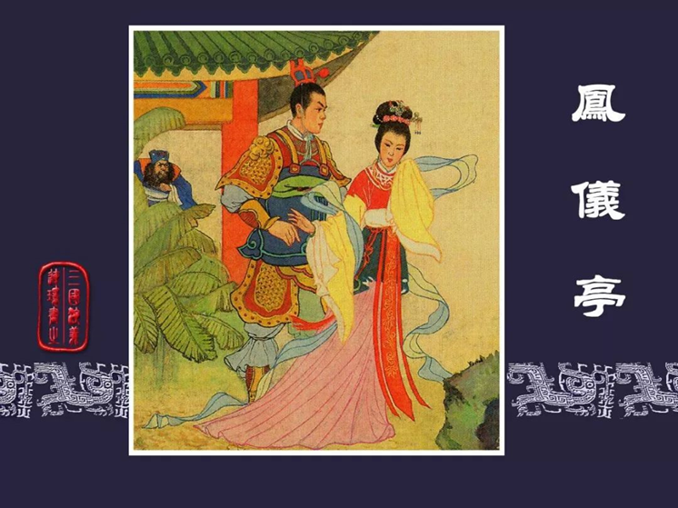

历史溯源
高抬戏剧目《凤仪亭》，其艺术灵感深植于中国古典名著《三国演义》，以“梳妆掷戟”的典故为核心，巧妙编织了一段爱恨交织、权谋与情感并重的宫廷秘史。该剧不仅是对原著情节的忠实再现，更通过高抬戏这一艺术形式展现出其独特的艺术魅力，将那段历史长河中的微妙情感与复杂局势展现得淋漓尽致。讲的是貂蝉和吕布二人在凤仪亭私会，被董卓撞破的故事。经过凤仪亭事件，董、吕二人彻底反目成仇，吕布下了杀董卓的决心。
最终，高抬戏剧目《凤仪亭》的画面定格在貂蝉与吕布私会的瞬间。这一画面，不仅是对两人情感高峰的纪念，也是对整个故事转折点的深刻诠释，预示着董、吕二人之间关系的彻底破裂。
演员及站位
高抬戏《凤仪亭》以其独特的艺术魅力和深刻的历史背景，吸引了无数观众的注意力。在这场戏中，吕布与貂蝉两位角色无疑是全场的焦点，他们不仅通过精湛的演技将人物性格刻画得入木三分，更通过巧妙的站位设计，将剧情的张力与冲突展现得淋漓尽致。
貌美妖娆的貂蝉居于上方，她身着华丽的服饰，雍容华贵却又不失高雅，仿佛是从古代画卷中走出的绝世佳人。她的妆容精致，眉眼如画，每一个细微的表情都透露出无尽的妩媚与哀愁，让人不禁为之动容。貂蝉的站位高挑，既凸显了她作为剧中核心人物的重要地位，也象征着她内心的高傲与不屈，以及对命运的抗争与挣扎。她站在高抬桌上的上方，如同一朵盛开的牡丹，娇艳欲滴，却又带着一丝不易察觉的忧伤，让人心生怜爱。
而在貂蝉的下方，威风凛凛的吕布则以一种截然不同的姿态出现。他身着战甲，手持方天画戟，英姿飒爽，气势如虹。吕布的站位低矮，却丝毫未减他的威严与霸气，反而更加凸显了他作为一代枭雄的刚毅与果敢。他的眼神锐利如鹰，直视着上方的貂蝉，仿佛要将她看穿，又似乎在诉说着内心的挣扎与矛盾。吕布的站位设计，既体现了他在剧中的反派角色定位，也暗示了他与貂蝉之间复杂而微妙的情感纠葛。
貂蝉与吕布的站位设计，不仅巧妙地展现了两人之间的身份差异与情感冲突，更通过高低错落的布局，营造出了一种强烈的视觉冲击力，使得整个高抬桌上场景充满了戏剧性与张力。观众在欣赏这场高抬戏时，仿佛能够穿越时空，亲眼目睹那段爱恨交织、波澜壮阔的历史传奇。
动作神态
高抬戏《凤仪亭》中，貂蝉与吕布的动作神态细腻入微，将剧中人物复杂的情感与性格特征展现得淋漓尽致。
貂蝉居于高抬桌上之上，姿态万千，仿佛一幅流动的画卷。她轻轻摆动身姿，每一个动作都透露出无尽的魅惑与柔情，如同春日里绽放的桃花，娇艳欲滴，引人遐想。她的眼神深邃而富有层次，仿佛能够洞察人心，直视着高抬桌上下的吕布，每一次流转都充满了深情与哀怨。她的目光时而温柔地停留在吕布身上，仿佛要将他深深地烙印在心底；时而又望向远方，眼神中透露出对未来的憧憬与迷茫，每一次凝视都仿佛在诉说着无尽的情愫，让人心生怜爱，又难以捉摸。
而高抬桌上下的吕布，则以一种截然不同的姿态展现着他的英勇与坚定。他右手紧握长剑，剑尖微微下垂，仿佛在积蓄着力量，随时准备挥剑而出，捍卫自己的尊严与爱情。左手则向上翻起翎子，这个动作既体现了他的威武与霸气，又透露出一种不羁与野性。他的双脚分开站立，重心稳固，如同山岳般屹立不倒，仿佛随时准备应对任何挑战，无论是来自敌人的威胁，还是内心的挣扎与矛盾。
貂蝉与吕布的动作神态，一柔一刚，一静一动，形成了鲜明的对比与互补。他们的眼神交流，如同无形的丝线，将两人紧紧相连，又仿佛隔着一层薄雾，让人看不清、摸不透。这种细腻而微妙的情感表达，不仅让观众感受到了剧中人物的内心世界，更让整个高抬桌上场景充满了戏剧性与张力，令人陶醉其中，流连忘返。
妆面服饰
吕布，作为三国时期赫赫有名的武将，以他的勇猛无双和威武不凡著称于世。在《凤仪亭》这一高抬戏剧目中，他头戴一顶璀璨夺目的紫金冠，这顶冠冕不仅象征着他高贵的身份与地位，更彰显了他作为武将的英勇与威严。尤为引人注目的是紫金冠两侧轻轻摇曳的翎子，这些翎子以细腻的羽毛编织而成，色彩斑斓，轻盈飘逸。
而貂蝉，这位被誉为“闭月羞花”的绝世佳人，在《凤仪亭》中，她头配一支精美的龙凤头簪，当她轻轻摇动发髻时，龙凤头簪随之轻轻晃动，仿佛有生命一般，构成了一幅动人心魄的画面。
展演剪影
1993年农历二月初一《凤仪亭》亮相青林口古镇，不仅为村民们带来了一场视觉与心灵的盛宴，更成为了他们心中一段珍贵的记忆，见证了传统文化在乡村地区的深厚底蕴与广泛影响力。这场盛况，如同一颗璀璨的明珠，镶嵌在青林口古镇的历史长河中，熠熠生辉。
